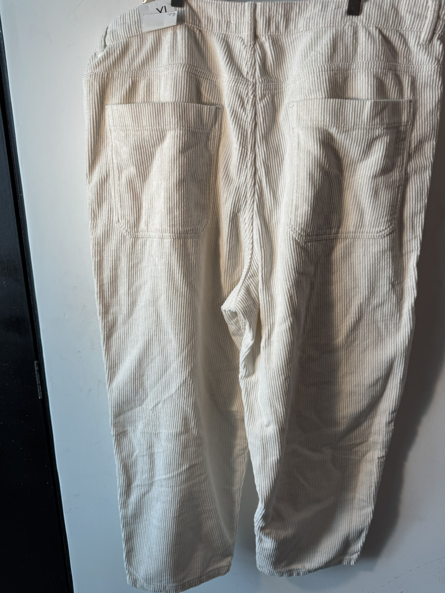
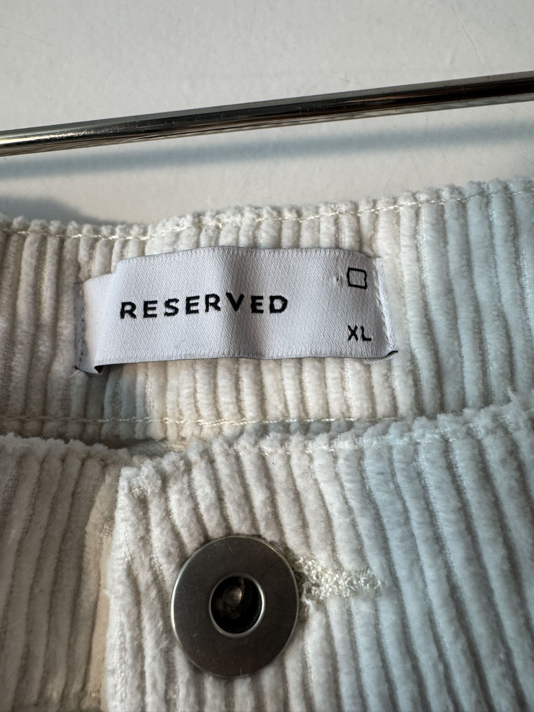
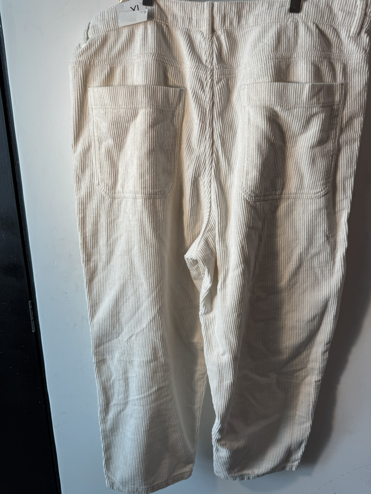
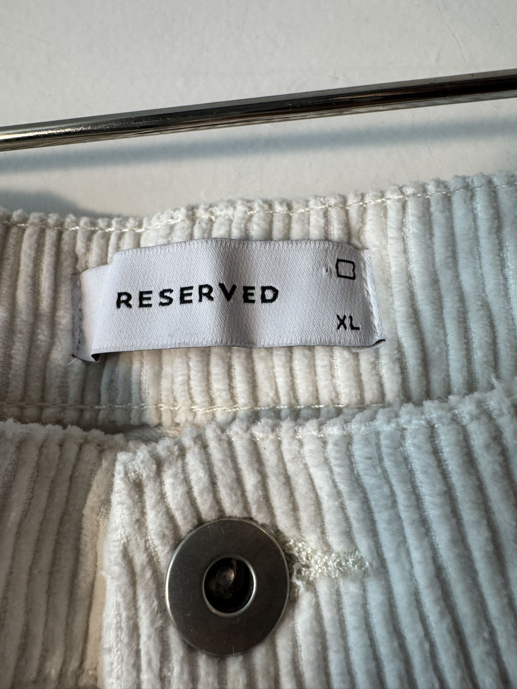

$400.00 MXN
Descripción
Pantalón de pana (corduroy) en color crema con bolsillos grandes de parche frontales estilo "Baker", corte amplio y cómodo que aporta textura y luminosidad a tu outfit.
Marca
Reserved
Tallas Disponibles
XL
Comprar por WhatsApp 💬